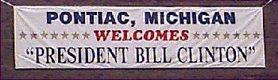
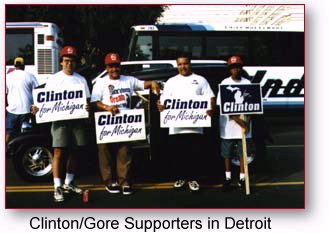
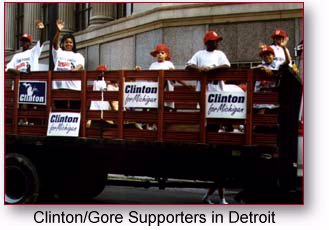

On the Horizon



As we head into the final days
of the campaign, we need your help
energizing your community to
GET OUT THE VOTE!Call the Clinton/Gore office number
below to volunteer.Michigan Highlights
October 30 - The President's
Remarks in YpsilantiOctober 22 - The President
delivers a foreign policy
address in DetroitOctober 21 - The President's
Remarks to Michigan Clergy UnitedOctober 7 - The First Lady in
Detroit and Flint and other
highlights from the Michigan officeSeptember 17 -
The President visits WestlandAugust 27-28 -
21st Century Express
Wyandotte Royal Oak Pontiac East Lansing Battle Creek Kalamazoo Ann Arbor resident Joan Ziegler Seibenick
tells us why she supports the President
in the 2nd edition of America's Home PageEast Lansing resident Nicole Ciachella
is profiled in the 6th edition of
America's Home PageDowgiac resident Anna Kidman
is profiled in the 7th edition of
America's Home PageFremont resident Curt Haufe
tells us why he supports the President
in the 8th editionClinton-Gore '96 Headquarters
155 West Congress Street
Suite 555
Detriot, MI 48226Phone: 313-965-3933
Fax: 313-965-4873
State Director: Freeman Hendrix
Michigan Democratic Coordinated Campaign
155 West Congress
Suite 555
Detroit, MI 48226Phone: 313-964-8683
Fax: 313-964-1875
The Coordinated Campaign is a distinct entity, directed by the Democratic National Party and the State Democratic Parties, and designed to elect Democrats to all levels of office.
Paid for by Clinton/Gore ’96 General Election Committee, Inc.